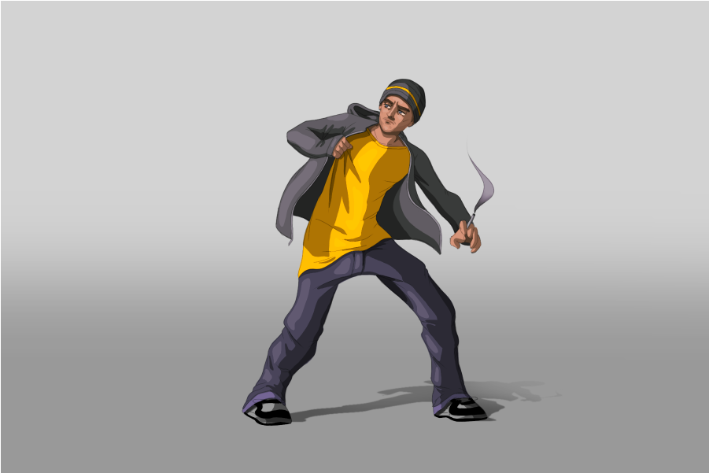

Contacta al correo claudiasaez@alu.easda.es
Técnicas de Producción y Edición Digitales es una asignatura que se da en el Grado Superior de Diseño Gráfico. En esta página web te mostraré cómo ha sido mi paso por el curso de la asignatura impartida en la EASDA
HTML y CSS son unos de los componentes más concidos en la disciplina de la programación. HTML se encarga del lenguaje marcado a partir del cual se define todo el contenido, en cambio el CSS es quien definirá su diseño y apariencia.
HTML y CSS son unos de los componentes más concidos en la disciplina de la programación. HTML se encarga del lenguaje marcado a partir del cual se define todo el contenido, en cambio el CSS es quien definirá su diseño y apariencia.

HTML y CSS son unos de los componentes más concidos en la disciplina de la programación. HTML se encarga del lenguaje marcado a partir del cual se define todo el contenido, en cambio el CSS es quien definirá su diseño y apariencia.
El proyecto "Creación de una página web personal" se basa precisamente en crear, a partir de lo conocimiento adquiridos en esta asignatura, una página web donde se presencien todas las actividades realizadas en clase, creatividad, originalidad y el resultado final correcto en cuento a la comprensión y uso de lapágina web en cualquier tipo de pantalla.
En este momento, se creó un comentario de "header" en el html para indicar que iba a comenzar creando esta etiqueta. Dentro, coloqué de manera centrada la frase "contacta al correo claudiasaez@alu.easda.es" con el text-warning, color amarillo en bootstrap con un tamaño de tipografía de 18pt (indicada en el CSS como #menu li>a, a partir del "id" de menu).
Todo ello, con un fondo detras de color negro (con el bg-dark) y añadiéndole display-flex y container-fluid para que se adapte a todo tipo de pantallas. Además, en el CSS también indicamos el color que se trata de un color grisáceo RGB (55, 47, 33).
.png)
El siguiente comentario en el html fue "nav" indicando que sería la siguiente etiqueta que se iba a trabajar. En el navegador o nav, colocamos la propiedad de bootstrap de "navbar navbar-expand-lg" que creará un menú que al estar en una pantalla grande se ve a simple vista y que cuando está es pequeña pasa a aparecer un botón a la derecha que al pulsarlo ya aparece dicho menú.
Este menú estará compuesto por 1 etiqueta "a", que será donde irá la palabra "inicio" y por 4 líneas, donde aparecerán primero las sesiones de octubre, las de noviembre, las de diciembre y finalmente las de enero. A estas se les ha añadido la propiedad de bootstrap para añadirle el botón o flecha desplegable, para que se sepa a simple vista que dentro de esos items se encontrará más información. Dentro de estos, por tanto, se encontrarán las sesiones programadas para esos meses y clicando en ellas, a través de "a href"", podrás acceder a dicha actividad.
Todas tienen la propiedad en class de "dropdown-menu" para que se acoplen una encima de otra en su sitio correspondiente. Seguidas de estas irá otra línea en la que se plantean los contenidos y objetivos generales del mes a través de dichas actividades. Posteriormente, seguido de las líneas, para que vaya a continuación, se añadirá la propiedad y etiqueta de bootstrap de "form" donde dentro encontraremos la etiqueta de "input" para agregar el correo, seguida de "Button" con el texto dentro de "suscríbete" donde los visitantes de la página web podrán clicar y suscribirse una vez esté escrito su correo.
Para el siguiente punto se ha escogido hacer un carrusel de imágenes, comenzando por un comentario que lo indica. Posteriormente, se ha colocado la propiedad de bootstrap del carrusel que se va pasando cada cierto tiempo, en concreto se ha puesto un intervalo de 3000. Además se le colocará un width del 100%.
Además, aparecerá el ítem del botón para pasar la fotografía si es preciso ("Button class "carousel-control-next").
Esta parte tendrá el id de "carousel-inner, que en el CSS se le añadirá un Max- heigth de 40rem, para que haya cierta distancia entre el menú superior.
Llegados a este punto, ya se puede iniciar la introducción de la página web, antes añadiendo un comentario para indicar que va a comenzar ".
En esta parte se añadirá la etiqueta de "section" y dentro de esta tendremos un "h1", donde aparecerá mi nombre, un "h2" en el cual aparecerá el nombre de la asignatura, y finalmente un "p" dónde colocaremos la descripción de dicha asignatura.
A través del "span", dentro de la última anterior, se diferenciarán los colores del texto (text-dark / text-secondary) para destacar ciertas partes.
Ahora se iniciaría la parte de los contenidos generales de la asignatura a través del comentario de "!--CONTENIDOS-->".
En esta encontraremos los tres contenidos de la asignatura (html y css / Bootstrap/ WordPress), cada uno con su imagen adecuada. La caja del texto junto a la imagen de cada una ocupará las 12 columnas del ancho de la pantalla, no obstante, lo que es el contenido ocupará en pantallas grandes (6), en medianas (6) y en pequeñas (8).
Las imágenes tendrán un width de 200 y un heigth de 160. La tipografía de los textos será de 5 en las propiedades de bootstrap.
El siguiente punto se basa en la creación de esta página web. Donde se explicarán los contenidos a través de "h1", "h2" y "p".
En el h1 iría el título, en el h2 vendría la descripción del proyecto, y en el h3 ya el desarrollo de este. Seguido de cada paso irá una captura de pantalla reflejando el proceso de manera visual en el visual studio code.
Estás imágenes tendrán un width del 80% indicado en el CSS a través del id "imagenproces".
EASDA son las siglas de la Escuela de Arte y Superior de Diseño de Alicante, un centro educativo perteneciente al Instituto Superior de Enseñanzas Artísticas (ISEACV) que oferta enseñanza oficial cualificada preparando profesionales capacitados para afrontar los retos que demanda nuestra sociedad en los distintos ámbitos del diseño y las artes plásticas y que académicamente oferta los Grados en Diseño y las Enseñanzas Profesionales de Artes Plásticas y Diseño.
58
Asignaturas impartidas
PostGrados
Grados y
Ciclos Formativos
Contacta a